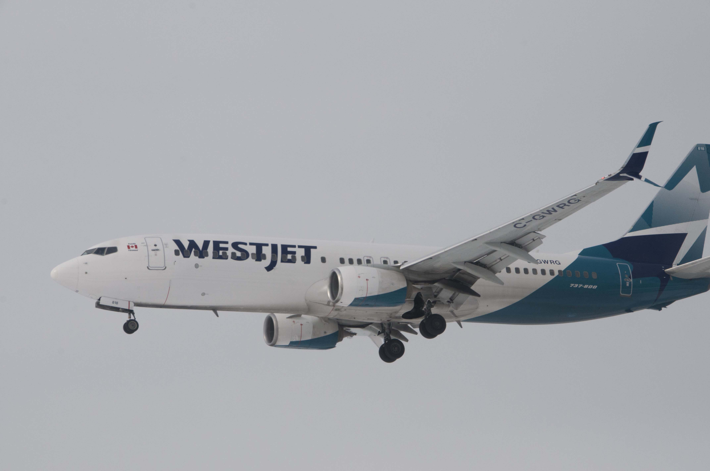
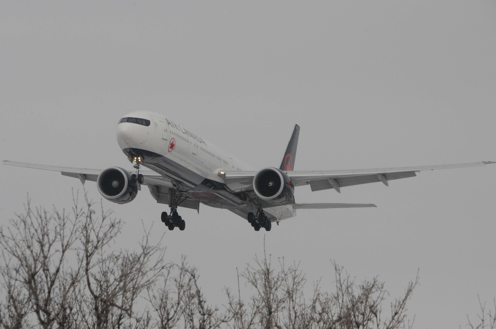
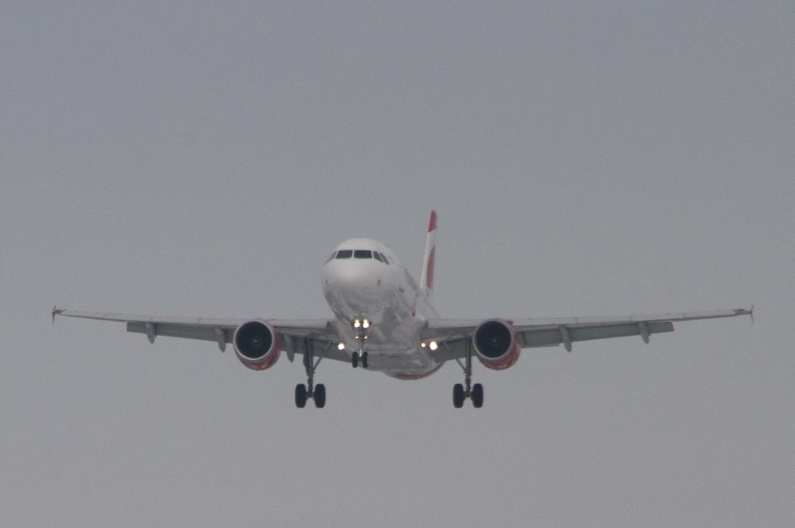
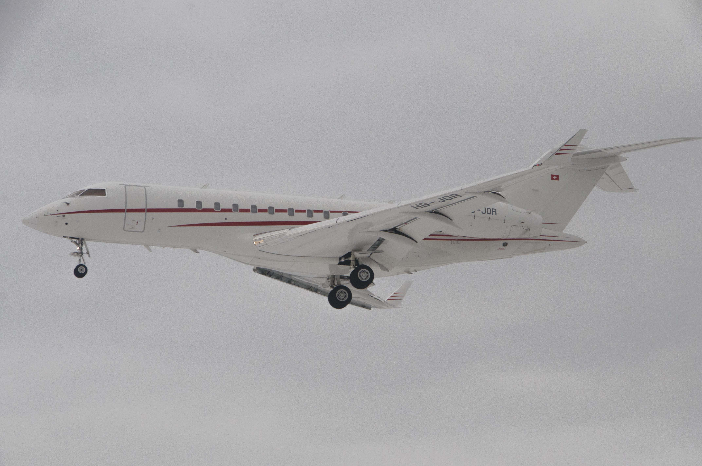
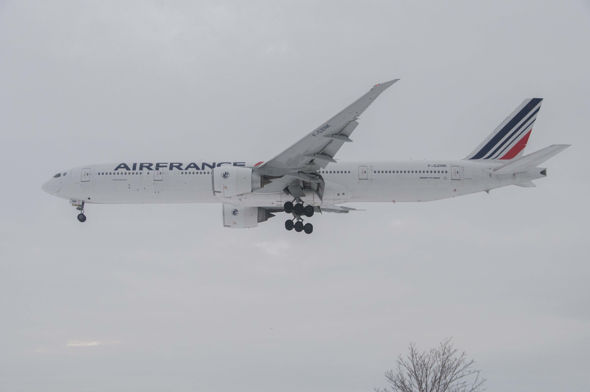
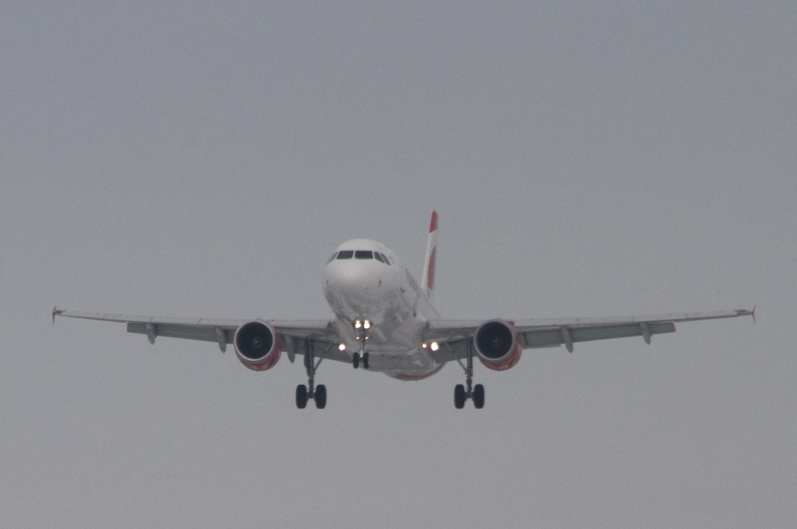
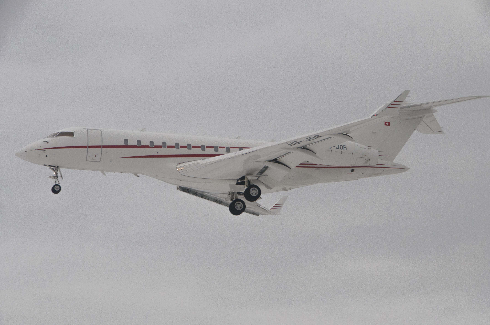
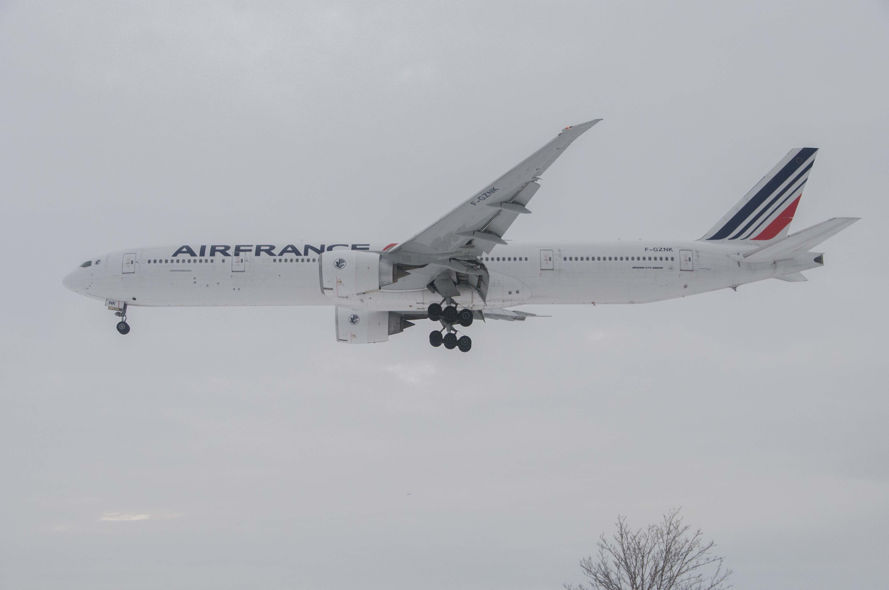

Welcome To Nikolai's Wobsite
YYZ Plane Spotting
Feb 8, 2026:
Images taken on Feb 22, 2025 with my Nikon D5000. I mostly used my 18-250mm lens with broken auto focus. I followed this guide and attempted to make it to location 4 after verifying that planes were landing on 24L and 24R with flightradar24. Transit took ages and I was cold and miserable by the end of my outing. Filenames include details on the plane in the frame.
  




